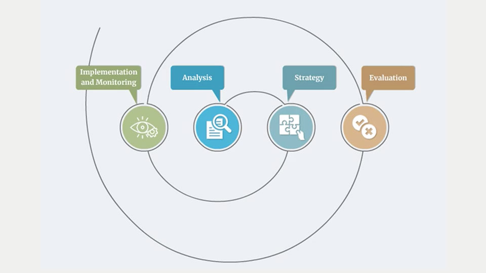
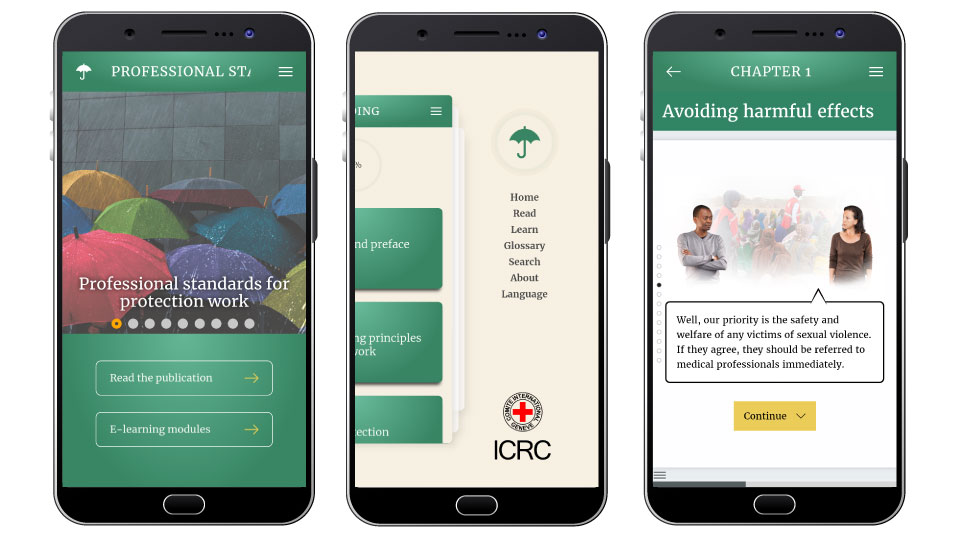
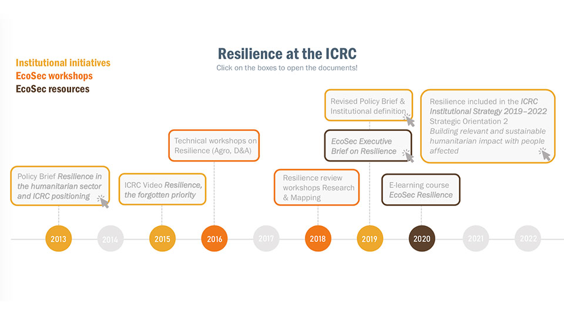
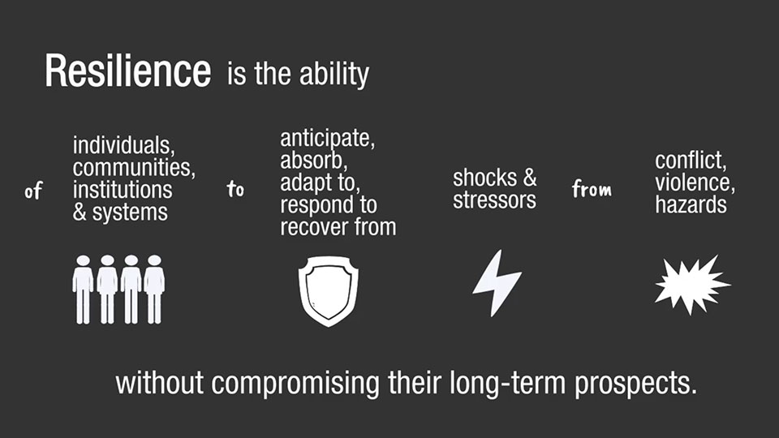
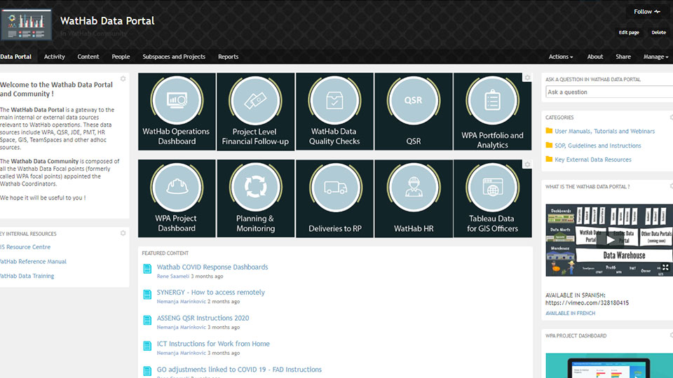

PSPW eLearning and mobile app


Working in international organisations, both in teams and autonomously, I provided training solutions to thousands of colleagues and local authorities worldwide. My projects included eLearning and blended courses, animated videos, mobile apps, software training, and trainings of trainers. I ran projects from start to finish, worked with experts and external providers, and used a range of authoring tools and LMS platforms.
One of the things I love most about working in e-learning is translating complex topics into simple and engaging content. I enjoy working in a team with experts and learning about new topics, and having the space to develop both my creativity and technical skills. What motivates is to help people with relevant resources and accompany them along their learning journey.
Taking a break from HQs, I went to the field for 8 months to work for A Rocha, a local conservation NGO in Kenya. I created engaging designs to promote their work and raised funds to protect threatened habitats and species. Now back in Switzerland, I am looking for new opportunities in the field of e-learning. Outside of work, you'll find me swimming in the nearest body of water, getting lost in nature looking for birds with my husband, or cooking/talking about food with friends.
International Committee of the Red Cross (ICRC)
Techno-Pedagogical Engineer -
Working in the Learning and Development Division, I managed learning initiatives liaising with internal experts and external providers. Moving to the Operations Department, I developed software trainings, built internal capacity on training development, and supported the digital transformation of the division.

United Nations Institute for Training and Research (UNITAR)
eLearning Officer -
I gained broad experience in the development, promotion and evaluation of online training courses, as well as key skills in project management and communication.
PSPW eLearning and mobile app
Resilience in Economic Security eLearning
Interactive Software Training

Community Facilitation Blended Training

Performance Management eLearning

Whiteboard Animations

Animated Instructional Videos

Communities of Practice
Communications and Fundraising

Authoring tools
Learning Management Systems
Graphic Design

University of Oxford
Comparative and International Education (MSc) -
Professional Standards for Protection Work (PSPW)
A wide range of protection workers on the field had to be trained on the updated protection standards. Learners are typically spread out across the world, work in different organisations, speak various languages, and spend a lot of time in the field.
I managed external providers commissioned to design an eLearning course translated in 5 languages. I then hosted this course both on the ICRC Learning Platform and on DisasterRelief, ensuring broad access across organisations.

To make the Standards both more accessible and engaging, we included animations, practical examples, and formative questions.
Working with another provider, we developed a mobile app including both the standards and the e-learning modules to facilitate seamless access to the standards for field workers.
Managing Online Communities of Practice
To accompany the launch of a new Communities digital platform, aspiring community managers needed training on how to set up, launch, facilitate, and manage their communities. The training had to include both technical and communication skills, and had to be available for new community managers at any time.
Working in a team with the platform manager, we partnered with The Community Roundtable , who provided core content through a series of short videos and quizzes. I built a blended learning path that incorporated this standardized content with tailor-made ICRC resources, case studies, and technical face-to-face workshops.

To make this training applicable and relevant, all exercises provided templates for community managers to plan and launch their community. These are a direct follow-up exercise from the video, but also constitute building blocks towards launching a community in the ICRC, directly connecting training to learners' work.

Integrated in an asynchronous training, a monthly drop-in session offers an opportunity for learners to raise questions, share ideas and get individual help on their community.
Performance Management and Development
To rapidly develop a training on the new Performance Management process and tool, there was a need for instructional design and managing an external provider to produce the modules.
I translated the expert's content into e-learning scenarios including key learning points, practice exercises, and storyboards.

I then assisted with reviewing the content produced by the external provider, ensuring they were of high quality and in line with the organization's culture (images, characters, language, etc.)

As this training was compulsory for all staff, all the content produced was mobile-responsive and available in three languages, to make learning as ubiquitous as possible.

Water and Habitat Data Training
The objective of this project was to update both the content and format of an existing software training intented for staff spread out in remote locations and changing regularly due to high staff turnover. User feedback indicated that this software was perceived as ineffective and not engaging.
Working in a team with the expert, we opened the course with a series of animated videos outlining "What's in it for me?", to increase engagement and break with the software interface itself. I used storytelling, humour and shared organizational references to create light and engaging content, in order to overcome learners' initial resistance to this topic.

Animated videos lend themselves well to simplifying complex subjects, in this case, complex software interfaces. This helps learners to focus on the essential information we want to convey. I designed simplified interfaces in Adobe Illustrator and integrated them in the video production software (Vyond).

To keep learners active throughout the screencasts, we created a case study used throughout the modules of the course. Learners work on entering data from a dummy project in the application, thus practising going through all the steps needed in the software. This simulation was developed through remote collaboration with the software expert based in Belgrade, using Adobe Captivate.

Whiteboard Animations
Given the increasing complexity of organizational structures and systems, there is a growing need for translating complex subjects to a wide audience with varying levels of understanding, and find a media to replace repetitive and time-consuming face-to-face briefings.
Together with content experts, I scripted and produced whiteboard animation videos summarizing the topic at hand in 5 mins maximum, using an animation software called Vyond.

Whiteboard animations lend themselves well to progressively explain complex topics in an accessible way. In this case, I used a whiteboard animation to outline reporting requirements to field officers - overlaying both departmental and organizational requirements, with a voice guiding the viewer throughout the timeline. To ensure we account for the viewer's reality, we started with an operational project.

These videos are an increasingly trendy format to communicate key messages to a large audience. Their versitality means they can be repurposed in a range of contexts: eLearning paths, workshops, Intranet, meetings, etc. To maximize impact, I ensured the video is self-contained and easy to access and share.

Resilience in Economic Security
Resilience is now a priority for the Economic Security Unit. Training is therefore required to align people's understanding of resilience, and, in particular how to apply resilience to their projects.
In teamwork with experts, we defined learning objectives and designed a short online learning path introducing the topic to all staff in the Unit.
Resilience is a relatively abstract concept. To make it more concrete for learners, I developed simple interactive resources allowing learners to browse through practical case studies of ICRC projects incorporating Resilience, and help learners explore complex models such as the Resilience Framework at their own pace.

I also used videos such as interviews and whiteboard animations to make the subject more approachable. I used visual cues to break down complex concepts and definitions to helps learners assimilate content.
Animated Instructional Videos
In a context of digitalisation and growing importance of data collection and data analysis, it is important that all staff feel concerned by this topic and understand both their role in data management and how they can use it for their work.
For such videos, it is essential to start from the learner's perspective and questions, and use common situations to build the scenario.

I used analogies to relate complex subjects to common situations. For example, we compared business intelligence to the food industry, and results-based management to a doctor's appointment. These videos successfully conveyed abstract information to a wide audience.

Rather than robot voices, I recorded human voices to add to my videos. This significantly improves engagement. Voices were recorded in a radio studio and edited using Audacity.

Designing and Launching Communities of Practice
International organizations are characterized by staff spread out across the world. In such contexts, it is essential to connect practitioners working in remote locations, to promote sharing of experience and good practices.
When introducing a new digital tool, simplifying the user experience and clearly outlining what users have to gain from it is critical. I worked with the Community owner to design a simple graphic chart for the community space. I chose to use hand-drawn illustrations to help users view it as an informal safe space, where they feel free to exchange questions and experiences.

I assisted Community owners by creating simple and visual guidelines for new users, outlining both the purpose and how to use the community.
Communities of practice are a great tool to promote and complement learning programmes, whether it is reaching out to the training audience to promote content, gathering feedback on specific questions, or understanding learners' issues and work realities.

NGO Communications and Fundraising
Working with A Rocha, a local conservation organization in Kenya, I was in charge of Communications and provided support to project teams in fundraising. Communications and fundraising efforts go hand in hand and are both critical to raise the support needed for the organization.
I led two crowdfunding campaigns, one with Mailchimp, using infographics to convey key numbers and messages, and the other on m-Changa, a Kenyan crowdfunding platform. These campaigns require strong, simple messages and engaging visual imagery to raise attention. I also successfully drafted and submitted a pre-proposal to the IUCN, which led us to be selected for the second round.

Using a graphical chart in line with the NGO's work, I designed various communication and design materials such as Annual Reports, posters, and branded objects.

To ensure regular communication, I used tools such as Hootsuite and Mailchimp to organize social media posts and monthly newsletters, and drafted articles on our projects to feed the organisation's website.

 Captivate
Captivate Mohive
Mohive Vyond
Vyond Audacity
Audacity Moodle
Moodle CrossKnowledge
CrossKnowledge InDesign
InDesign Illustrator
Illustrator Photoshop
Photoshop Premiere Pro
Premiere Pro Canva
Canva